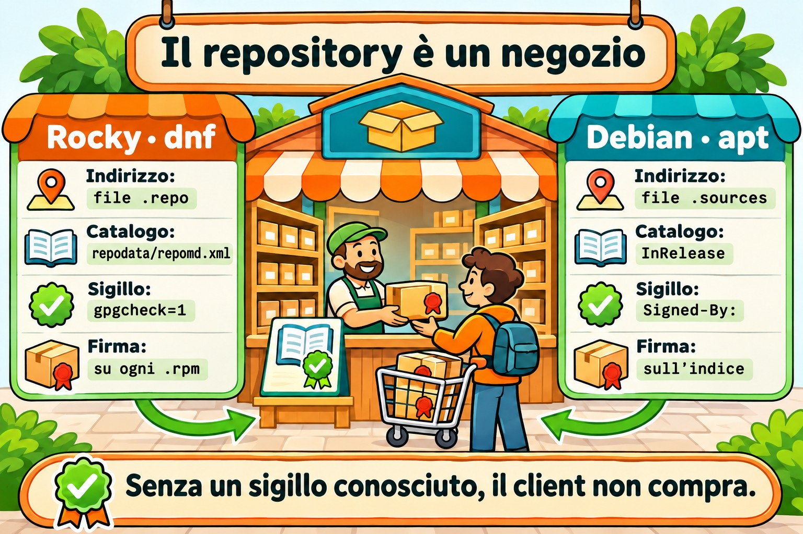
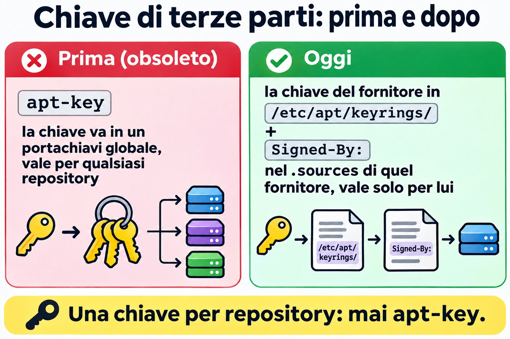
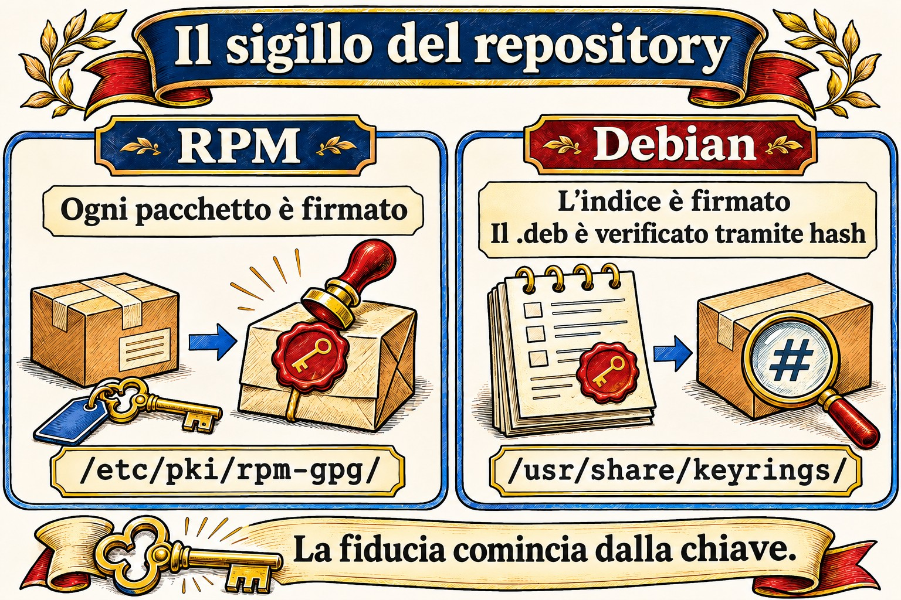

Lezione 6.3 · Repository
Nelle due lezioni precedenti hai usato apt e dnf come se i pacchetti cadessero dal cielo. Arrivano da qualche parte: un indirizzo scritto in un file di configurazione, un indice firmato e una chiave di cui il sistema ha deciso di fidarsi. Oggi impari a leggere, aggiungere, disattivare e riparare questa catena, e a creare un repository a partire dalla ISO per installare senza internet.
Il cuore di questa lezione: leggere e scrivere un
.repo(Rocky) e un.sources(Debian), attivare e disattivare un repository al volo e in modo permanente, abilitare EPEL nel modo corretto, capire dove sta la firma e creare un repository locale con la ISO. Il resto è approfondimento.
| Scheda | |
|---|---|
| Modulo | M6 · Software, lezione 3 di 5 |
| Quando | Settimana 10 |
| Alla fine | Sai da dove viene ogni pacchetto, di chi si fida il sistema e come installare senza internet |
| Prerequisiti | Lezioni 6.1 e 6.2 |
| Durata | circa 2h30 |
| Snapshot | m6a3-inicio e m6a3-fim, su entrambe le VM |
1 · Riscaldamento
Rispondi prima di leggere. Sbagliare qui fa parte del metodo.
- Scarichi un pacchetto da un mirror che nessuno conosce, dall'altra parte del mondo. Chi garantisce che sia l'originale?
- Si possono installare pacchetti su un server senza alcun accesso a internet?
- Un server Rocky ha cinque repository e uno è andato offline. Il
dnf installdegli altri quattro continua a funzionare?
2 · Perché conta
| La richiesta | La risposta sbagliata | Cosa provoca |
|---|---|---|
| "dnf ha smesso di funzionare, dà un errore di metadata" | Cancellare il .repo che dà errore senza guardare quale fosse | Sparisce il repository di un fornitore e i suoi aggiornamenti si fermano in silenzio |
"Il tutorial dice di incollare un curl ... | apt-key add" | Incollare | La chiave diventa valida per tutti i repository, non solo per quello del fornitore |
| "Mi serve htop su Rocky, non lo trovo" | Scaricare il .rpm da un sito qualsiasi | Pacchetto senza una firma nota e senza aggiornamenti futuri |
| "Il cliente non fa uscire il server su internet" | "Allora non si può installare niente" | Si può: repository locale con la ISO o un mirror interno |
| "Errore di chiave GPG" | gpgcheck=0 e via | Spegni proprio la protezione contro i pacchetti manomessi |
3 · Modello mentale
Un repository è un negozio con catalogo. Il client (apt o dnf) conserva un elenco di indirizzi di negozi e un portachiavi con i sigilli che accetta. Prima di comprare, scarica il catalogo, controlla il sigillo e solo allora prende il pacchetto. Senza un sigillo noto, non compra.
ROCKY (dnf) DEBIAN (apt)
/etc/yum.repos.d/*.repo /etc/apt/sources.list(.d/*.sources)
baseurl / mirrorlist / metalink URIs + Suites + Components
│ │
▼ ▼
repodata/repomd.xml (catálogo) dists/<suite>/InRelease (catálogo ASSINADO)
│ │ hashes
▼ ▼
pacote.rpm (cada pacote ASSINADO) Packages ──► pacote.deb (confere o hash)
│ │
gpgcheck=1 + gpgkey= Signed-By: chave em
/etc/pki/rpm-gpg/ /usr/share/keyrings ou /etc/apt/keyringsLa differenza che esce più spesso: nel mondo RPM ogni pacchetto è firmato. In Debian a essere firmato è l'indice (InRelease/Release), e i .deb vengono verificati con l'hash contenuto in quell'indice. Il risultato è simile, ma un .deb scaricato a mano non porta con sé una firma propria.


4 · L'essenziale
Rocky: il file .repo
Ogni file /etc/yum.repos.d/*.repo viene letto (deve finire in .repo). Ogni blocco [id] è un repository:
[iso-baseos]
name=Rocky ISO - BaseOS
baseurl=file:///mnt/iso/BaseOS
enabled=1
gpgcheck=1
gpgkey=file:///etc/pki/rpm-gpg/RPM-GPG-KEY-Rocky-9| Campo | Cosa fa |
|---|---|
[id] | Nome breve, unico in tutto il sistema. È quello che usi con --enablerepo |
name | Descrizione per umani |
baseurl | Indirizzo diretto del repository (http://, https://, file://). Lì dentro deve esistere repodata/ |
mirrorlist / metalink | Indirizzo di un elenco di mirror. dnf ne sceglie uno. Il metalink porta anche gli hash del catalogo |
enabled | 1 attivo, 0 disattivato |
gpgcheck | 1 controlla la firma di ogni pacchetto. Lascia 1 |
gpgkey | Dove si trova la chiave pubblica. Alla prima installazione dnf mostra l'impronta digitale e chiede conferma |
skip_if_unavailable | Se il repository cade, dnf prosegue con gli altri (su Rocky il valore predefinito è False) |
priority | Vince il numero più basso quando lo stesso pacchetto esiste in due repository (predefinito 99) |
Variabili che compaiono nei file: $releasever (9, 10), $basearch (x86_64). Vedi il valore con rpm -E %rhel e uname -m.
| Voglio... | Comando |
|---|---|
| Vedere tutti, anche quelli disattivati | dnf repolist all |
| Dettagli di uno | dnf repoinfo baseos |
| Attivarlo solo in questa esecuzione | dnf --enablerepo=crb install X |
| Usare solo alcuni | dnf --disablerepo='*' --enablerepo='iso-*' install X |
| Attivare / disattivare in modo permanente | sudo dnf config-manager --set-enabled crb / --set-disabled crb |
| Aggiungere tramite URL | sudo dnf config-manager --add-repo URL |
| Rifare la cache dei metadati | sudo dnf makecache / sudo dnf clean all |
| Chiavi di cui si fida rpm | rpm -qa 'gpg-pubkey*' |
| Importare una chiave a mano | sudo rpm --import /caminho/ou/URL |
Il config-manager arriva con dnf-plugins-core. Se manca, sudo dnf install dnf-plugins-core. Modifica solo l'enabled= del file, niente di magico.
Rocky: EPEL e CRB
EPEL (Extra Packages for Enterprise Linux) è il repository della comunità Fedora con migliaia di pacchetti che Red Hat non distribuisce: htop, ncdu, fail2ban... Molti dipendono da librerie di sviluppo che stanno nel CRB (CodeReady Builder), che è disattivato di default. Per questo l'ordine è:
sudo dnf config-manager --set-enabled crb
sudo dnf install epel-releaseIl pacchetto epel-release installa il .repo e la chiave. Niente .rpm da siti a caso.
Debian: sources.list e il formato deb822
Due modi, stesso effetto:
# Uma linha (sources.list clássico, Debian 12 e anteriores)
deb [signed-by=/usr/share/keyrings/debian-archive-keyring.gpg] http://deb.debian.org/debian bookworm main contrib# deb822 (/etc/apt/sources.list.d/*.sources, padrão no Debian 13)
Types: deb
URIs: http://deb.debian.org/debian
Suites: trixie trixie-updates
Components: main contrib non-free-firmware
Signed-By: /usr/share/keyrings/debian-archive-keyring.gpg| Campo | Cos'è |
|---|---|
Types | deb (binari) e/o deb-src (sorgenti) |
URIs | Indirizzo del mirror |
Suites | Versione: trixie, trixie-updates, trixie-security, trixie-backports (oppure stable, che cambia versione da solo: evitalo sui server) |
Components | main (libero), contrib, non-free, non-free-firmware |
Signed-By | Quale chiave può firmare questo repository |
Enabled: no | Disattiva senza cancellare (solo in deb822) |
Con apt 3.0 (Debian 13), sudo apt modernize-sources converte il vecchio formato in deb822.
Chiavi di terze parti, nel modo giusto: la chiave del fornitore va in /etc/apt/keyrings/ (cartella tua) e il Signed-By: punta a quella, solo nel .sources di quel fornitore. apt-key è obsoleto ed è stato rimosso nelle versioni nuove: metteva la chiave in un portachiavi globale, valido per qualsiasi repository.


Backports: versioni più recenti di alcuni pacchetti, compilate per il tuo Debian stable. Entrano con priorità 100, quindi non vengono mai scelti da soli. Sei tu a chiederli: sudo apt install -t trixie-backports pacote.
Repository locale con la ISO
La ISO DVD di Rocky è già un repository: dentro ci sono BaseOS/ e AppStream/, ciascuno con il proprio repodata/. La ISO minimale ne contiene solo una parte. Monti, punti il baseurl a file:///... e hai finito. È così che si installa in una rete isolata, ed è la base della Sfida dell'M6.
In Debian, anche la ISO ha l'indice firmato. La strada classica è apt-cdrom add con il disco montato, che aggiunge la voce da solo.
Rocky × Debian
| Argomento | Rocky (dnf) | Debian (apt) |
|---|---|---|
| Dove si configura | /etc/yum.repos.d/*.repo | /etc/apt/sources.list e /etc/apt/sources.list.d/*.sources oppure *.list |
| Cosa è firmato | Ogni .rpm | L'indice InRelease/Release |
| Dove stanno le chiavi | /etc/pki/rpm-gpg/ e il database di rpm (gpg-pubkey) | /usr/share/keyrings/ (pacchetti) e /etc/apt/keyrings/ (tue) |
| Attivare solo adesso | --enablerepo= / --disablerepo= | -t suite (sceglie l'origine) |
| Disattivare in modo permanente | enabled=0 | Enabled: no oppure commentare la riga |
| Aggiornare il catalogo | automatico, oppure dnf makecache | apt update, sempre |
| Pacchetti extra | EPEL (+ CRB) | contrib, non-free, backports |
| Senza internet | .repo con baseurl=file:/// | apt-cdrom add oppure URIs: file:/ |
| Chi ha la precedenza | priority= | apt_preferences (pinning) |
Su SUSE: zypper lr elenca e zypper ar URL nome aggiunge.
5 · Lab guidato
Passo 0 · Snapshot e cartella. Su Proxmox:
qm snapshot 201 m6a3-inicio
qm snapshot 202 m6a3-inicioSu entrambe le VM: mkdir -p ~/lab63 && cd ~/lab63.
Parte A · rocky-lab
Passo 1 · Anatomia. Guarda cosa esiste già prima di toccare qualcosa:
dnf repolist all
ls /etc/yum.repos.d/
grep -v '^#' /etc/yum.repos.d/rocky.repo | grep -A8 '^\[baseos\]'
dnf repoinfo baseos | head -20
ls /etc/pki/rpm-gpg/
rpm -qa 'gpg-pubkey*'Nota: baseos usa mirrorlist, non baseurl. crb compare come disabled. Ogni gpg-pubkey-... è una chiave che rpm accetta già. Guarda di chi è una: rpm -qi $(rpm -qa 'gpg-pubkey*' | head -1) | grep -i summary.
Passo 2 · Attivare e disattivare. Prima solo per un comando, poi in modo permanente:
dnf --disablerepo='*' --enablerepo=baseos list --available | wc -l
dnf list --available | wc -l
sudo dnf config-manager --set-disabled appstream
grep -A6 '^\[appstream\]' /etc/yum.repos.d/rocky.repo | grep enabled
dnf repolist
sudo dnf config-manager --set-enabled appstreamIl primo numero è più piccolo: ha risposto solo BaseOS. Il config-manager ha semplicemente cambiato enabled=1 in enabled=0 nel file. Avresti potuto farlo con un editor.
Passo 3 · CRB ed EPEL. Nel modo corretto, facendo attenzione alla chiave:
sudo dnf config-manager --set-enabled crb
sudo dnf install -y epel-release
cat /etc/yum.repos.d/epel.repo | grep -E '^\[|gpgkey|gpgcheck'
rpm -qa 'gpg-pubkey*' | wc -l
sudo dnf install htopNell'ultimo comando non usare -y. dnf mostrerà Importing GPG key con il nome e l'impronta digitale (fingerprint) della chiave di EPEL e ti chiederà conferma. Leggi prima di rispondere y. Poi:
rpm -qa 'gpg-pubkey*' | wc -l
dnf info htop | grep -i repoUna chiave in più, e htop è arrivato da epel.
Passo 4 · Repository locale con la ISO. Su Proxmox, trova la ISO di Rocky e mettila nel CD-ROM della VM:
pvesm status --content iso
pvesm list <storage-de-iso> --content iso | grep -i rocky
qm set 201 --ide2 <storage-de-iso>:iso/<arquivo-da-rocky>.iso,media=cdromSu rocky-lab:
lsblk | grep rom
sudo mkdir -p /mnt/iso
sudo mount -o ro /dev/sr0 /mnt/iso
ls /mnt/iso
ls /mnt/iso/BaseOSDevono comparire BaseOS/ e AppStream/, ciascuno con repodata/. Ora il .repo:
V=$(rpm -E %rhel)
sudo tee /etc/yum.repos.d/iso.repo >/dev/null <<EOF
[iso-baseos]
name=Rocky ISO - BaseOS
baseurl=file:///mnt/iso/BaseOS
enabled=1
gpgcheck=1
gpgkey=file:///etc/pki/rpm-gpg/RPM-GPG-KEY-Rocky-$V
[iso-appstream]
name=Rocky ISO - AppStream
baseurl=file:///mnt/iso/AppStream
enabled=1
gpgcheck=1
gpgkey=file:///etc/pki/rpm-gpg/RPM-GPG-KEY-Rocky-$V
EOF
cat /etc/yum.repos.d/iso.repo
dnf repolistProva usando solo la ISO, come se internet non esistesse:
dnf --disablerepo='*' --enablerepo='iso-*' list --available | head
sudo dnf --disablerepo='*' --enablerepo='iso-*' install -y tmux
dnf info tmux | grep -i repoSe la tua ISO è quella minimale e tmux non c'è, scegli un altro pacchetto dall'elenco del primo comando. From repo deve dire iso-baseos o iso-appstream.
Parte B · debian-lab
Passo 5 · Anatomia.
. /etc/os-release; echo $VERSION_CODENAME
cat /etc/apt/sources.list 2>/dev/null | grep -v '^#'
ls /etc/apt/sources.list.d/
cat /etc/apt/sources.list.d/*.sources 2>/dev/null
ls /usr/share/keyrings/ /etc/apt/keyrings/ 2>/dev/null
apt-cache policy | head -20In apt-cache policy, ogni origine compare con un numero di priorità (500 per quelle normali) e la riga release mostra la suite (n=trixie) e il componente.
Passo 6 · Backports in deb822.
. /etc/os-release
sudo tee /etc/apt/sources.list.d/backports.sources >/dev/null <<EOF
Types: deb
URIs: http://deb.debian.org/debian
Suites: ${VERSION_CODENAME}-backports
Components: main
Signed-By: /usr/share/keyrings/debian-archive-keyring.gpg
EOF
sudo apt update
apt-cache policy | grep -B1 backportsNota il 100: i backports vengono consultati, ma non vincono mai da soli. Per vederlo all'opera, cerca un pacchetto che abbia lì una versione più nuova e confronta:
apt list -a 2>/dev/null | grep -- "-backports" | head -5
apt-cache policy <um-pacote-da-lista>Candidate: resta la versione normale. Per installare quella dei backports servirebbe -t ${VERSION_CODENAME}-backports. Non installare.
Passo 7 · Disattivare senza cancellare. Aggiungi Enabled: no al blocco e controlla:
echo 'Enabled: no' | sudo tee -a /etc/apt/sources.list.d/backports.sources
sudo apt update
apt-cache policy | grep -c backportsIl contatore va a zero.
Pulizia
Rocky: tieni EPEL e CRB (ti serviranno). Smonta la ISO e disattiva il suo repository, così non rompe dnf al prossimo boot:
sudo dnf config-manager --set-disabled iso-baseos iso-appstream
sudo umount /mnt/isoDebian: il backports.sources resta, disattivato. Ti sarà utile più avanti.
Decidi 1
Ti serve ncdu su un server Rocky di produzione. Esiste solo in EPEL. L'installazione di epel-release ha dato un errore di chiave GPG a causa di un proxy che corrompe i download. Cosa fai?
A) Installa con gpgcheck=0 solo questa volta, poi torna a 1. B) Risolve il proxy, installa epel-release normalmente e lascia gpgcheck=1. C) Scarica ncdu.rpm da un sito di pacchetti e installa con rpm -i.
Scegli un'opzione prima di continuare.
| Se hai scelto | Risultato | Perché |
|---|---|---|
| A | Funziona, e hai installato qualcosa di cui non sai se è l'originale | L'errore di chiave è proprio l'avviso che il file è arrivato diverso. Disattivare il controllo significa ignorare l'allarme |
| B | Giusto | Il problema è il proxy. Una volta risolto, la firma torna e ottieni anche i futuri aggiornamenti di EPEL |
| C | Funziona oggi, marcisce domani | Senza repository non ci sono aggiornamenti di sicurezza, e l'origine è sconosciuta |
Da ricordare: un errore di firma è un sintomo. Ripara la causa, mai l'allarme.
Decidi 2
Il tutorial di un fornitore ti dice di eseguire, su Debian:
curl -fsSL https://fornecedor.example/key.gpg | sudo apt-key add -
echo "deb https://fornecedor.example/apt stable main" | sudo tee /etc/apt/sources.list.d/fornecedor.listA) Lo esegue così com'è, il tutorial è del fornitore stesso. B) Salva la chiave in /etc/apt/keyrings/fornecedor.gpg e usa Signed-By: con quella, solo nel .sources del fornitore. C) Salta la chiave e mette [trusted=yes] nella riga.
Scegli un'opzione prima di continuare.
| Se hai scelto | Risultato | Perché |
|---|---|---|
| A | Potrebbe non partire nemmeno (apt-key è sparito dalle versioni nuove), e dove funziona apre una porta | La chiave diventa affidabile per qualsiasi repository. Chi ha quella chiave può firmare un falso "pacchetto Debian" |
| B | Giusto | La chiave vale solo per quel repository. È quello che raccomanda oggi la documentazione stessa di Debian |
| C | La peggiore di tutte | trusted=yes spegne la verifica di quel repository. Chiunque sul percorso può sostituire i pacchetti |
Da ricordare: una chiave, un repository. Se la chiave arriva in formato testo (ASCII armored), convertila con gpg --dearmor oppure salvala come .asc.
6 · Rompi e ripara
Guasto 1 · Un repository mette fuori uso tutto dnf (rocky-lab)
Crea un repository con un indirizzo sbagliato:


sudo tee /etc/yum.repos.d/quebrado.repo >/dev/null <<'EOF'
[quebrado]
name=Repo com URL errada
baseurl=https://repo.invalido.example/el9/
enabled=1
gpgcheck=1
EOF
sudo dnf makecacheSintomo: Failed to download metadata for repo 'quebrado' e dnf si ferma, anche per i pacchetti degli altri repository.
Diagnosi: il messaggio riporta l'id. Trova il file con grep -l '^\[quebrado\]' /etc/yum.repos.d/*.repo e testa l'indirizzo con curl -I <baseurl>/repodata/repomd.xml.
Riparazione, dalla più rapida alla definitiva:
- Per lavorare subito:
sudo dnf --disablerepo=quebrado install X. - Se il repository ogni tanto cade e non è essenziale:
skip_if_unavailable=Truein quel blocco. - Se l'URL è sbagliato: correggi il
baseurl. Se il repository non esiste più:enabled=0oppure rimuovi il file, dopo aver capito di chi era.
Nel lab, rimuovilo: sudo rm /etc/yum.repos.d/quebrado.repo.
Nella vita reale: è la richiesta classica dopo che un fornitore cambia indirizzo. Prima di cancellare, annota cosa forniva quel repository (dnf list --installed | grep @quebrado).
Guasto 2 · Chiave sbagliata in Signed-By (debian-lab)
Riattiva i backports e punta Signed-By a un file che non esiste:
sudo sed -i '/^Enabled:/d; s|^Signed-By:.*|Signed-By: /etc/apt/keyrings/nao-existe.gpg|' /etc/apt/sources.list.d/backports.sources
sudo apt updateSintomo: apt update si lamenta di non essere riuscito a verificare la firma di quel repository (errore GPG, NO_PUBKEY o impossibilità di aprire la chiave) e ignora il suo indice.
Diagnosi: il messaggio cita l'URL e la suite. grep -r Signed-By /etc/apt/sources.list.d/ e ls -l sul file indicato.
Riparazione: rimetti il Signed-By a /usr/share/keyrings/debian-archive-keyring.gpg ed esegui sudo apt update. Poi disattiva di nuovo con Enabled: no.
Nella vita reale: succede quando la chiave di un fornitore scade o viene sostituita. La riparazione è scaricare la chiave nuova dal canale ufficiale del fornitore, mai trusted=yes.
Guasto 3 · La ISO è sparita dopo il reboot (narrativa)
Hai lasciato attivo iso.repo, hai montato la ISO a mano e hai riavviato. Il mount non sopravvive al boot, quindi dnf cerca /mnt/iso/BaseOS/repodata e non lo trova: Failed to download metadata for repo 'iso-baseos' (a volte con Curl error (37)).
Riparazione: o il repository è temporaneo (lascia enabled=0 e usa --enablerepo quando monti), oppure è permanente e il montaggio va in /etc/fstab. La seconda opzione fa parte della Sfida dell'M6.
7 · Trappole
| Trappola | Cosa succede | Come evitarla |
|---|---|---|
gpgcheck=0 "solo per provare" | Resta per sempre, nessuno se ne ricorda | Se proprio serve, aggiungi un commento con data e motivo |
baseurl che punta alla radice della ISO | Cannot download repomd.xml: la radice non ha repodata/ | Punta a BaseOS/ e AppStream/, un blocco ciascuno |
File in yum.repos.d senza .repo alla fine | dnf lo ignora in silenzio | ls /etc/yum.repos.d/ e dnf repolist dopo averlo creato |
Due blocchi con lo stesso [id] | Uno sovrascrive l'altro, oppure compare un avviso | id unico e descrittivo |
| EPEL senza CRB | Il pacchetto EPEL fallisce per una dipendenza che "non esiste" | Attiva prima crb |
.repo della versione 8 copiato sulla 9 | Pacchetti di un'altra versione, dipendenze rotte | Controlla $releasever e il percorso dell'URL |
apt-key add o trusted=yes | Fiducia globale o nessuna | /etc/apt/keyrings/ + Signed-By |
Mescolare testing o sid in stable | "FrankenDebian": un upgrade trascina mezzo sistema nuovo | Per una versione nuova di un pacchetto, usa i backports |
Lo stesso repository in due file con Signed-By diversi | Conflicting values set for option Signed-By e apt update si ferma | Una voce per repository; grep -r sull'URL prima di aggiungere |
Usare stable invece del nome in codice | Al rilascio di una nuova versione, apt upgrade diventa un upgrade di versione | Usa il nome in codice (trixie) |
8 · Quiz
Rispondi senza guardare. Le soluzioni sono alla fine della lezione.
- Qual è la differenza tra
baseurlemirrorlist? dnf installsi ferma conFailed to download metadata for repo 'fornecedor-x'. Cosa fai per installare adesso, e quali sono le opzioni definitive?- Perché, su Rocky 9, l'installazione di EPEL chiede di attivare prima il CRB?
- In Debian, cosa è firmato: ogni
.debo l'indice? Che conseguenza ha questo per un.debscaricato a mano? - Cosa fa
Signed-By:cheapt-key addnon faceva? - A file in /etc/yum.repos.d/ is read by dnf only if its name ends with: a) .conf b) .repo c) .list d) .sources
9 · Promemoria
Da sapere a memoria:
| Voglio... | Comando |
|---|---|
| Elencare i repository (Rocky) | dnf repolist all |
| Usarne solo alcuni adesso | dnf --disablerepo='*' --enablerepo=ID install X |
| Attivare / disattivare in modo permanente | sudo dnf config-manager --set-enabled ID / --set-disabled ID |
| EPEL | sudo dnf config-manager --set-enabled crb e sudo dnf install epel-release |
Campi minimi di un .repo | [id], name, baseurl, enabled, gpgcheck, gpgkey |
| Origini e priorità (Debian) | apt-cache policy |
Campi di un .sources | Types, URIs, Suites, Components, Signed-By |
| Chiave di terze parti (Debian) | /etc/apt/keyrings/nome.gpg + Signed-By |
Da consultare:
| Voglio... | Comando |
|---|---|
| Dettagli di un repository | dnf repoinfo ID |
| Aggiungere tramite URL | sudo dnf config-manager --add-repo URL |
| Rifare la cache | sudo dnf clean all && sudo dnf makecache |
| Chiavi accettate da rpm | rpm -qa 'gpg-pubkey*' |
| Importare una chiave | sudo rpm --import ARQUIVO_OU_URL |
| Montare la ISO | sudo mount -o ro /dev/sr0 /mnt/iso |
| Cambiare la ISO della VM (Proxmox) | qm set VMID --ide2 STORAGE:iso/ARQ.iso,media=cdrom |
| Installare dai backports | sudo apt install -t CODINOME-backports X |
| Disattivare una fonte (deb822) | Enabled: no |
| Convertire in deb822 | sudo apt modernize-sources (apt 3.0+) |
| Convertire una chiave di testo | gpg --dearmor < key.asc > key.gpg |
| CD/ISO su Debian | sudo apt-cdrom add |
| SUSE | zypper lr, zypper ar URL nome |
Flashcard:
- Dove sta la firma? → RPM: in ogni pacchetto. APT: nell'indice (InRelease).
--enablerepo×config-manager --set-enabled→ un solo comando × scrive nel file.- I backports si installano da soli? → No. Priorità 100, solo con
-t. - Errore GPG → sintomo; ripara la causa, non spegnere mai il controllo.
- Repository della ISO → un blocco per cartella (
BaseOS,AppStream),baseurl=file:///....
10 · Checklist e chiusura
- [ ] Leggo un
.repoe un.sourcese dico da dove viene ogni pacchetto - [ ] Attivo e disattivo un repository solo per un comando e in modo permanente
- [ ] Abilito EPEL con CRB e riconosco la domanda sull'importazione della chiave
- [ ] Scrivo da zero un
.repoper la ISO e installo usando solo quello - [ ] So perché
apt-keyetrusted=yessono una cattiva idea - [ ] Riparo un repository rotto senza cancellare alla cieca
Ultimo esercizio, senza guardare la lezione: su rocky-lab, monta di nuovo la ISO, scrivi un nuovo .repo chiamato meu-iso.repo solo con AppStream e l'id meu-appstream, e installa un pacchetto usando soltanto quello. Poi disattiva quel repository e smonta la ISO.
Reboot e verifica:
# rocky-lab
sudo reboot
dnf repolist # nenhum iso-* ligado, epel e crb ligados
sudo dnf makecache # sem erro
# debian-lab
sudo apt update # sem erro e sem aviso de GPGSnapshot di fine (su Proxmox):
qm snapshot 201 m6a3-fim
qm snapshot 202 m6a3-fim11 · Nella vita reale
Missione, sola lettura. Su un server Rocky/RHEL e su un Debian/Ubuntu che già amministri, esegui solo questo. Niente aggiunte, né attivazioni o disattivazioni di repository.
# RHEL-like
dnf repolist all
grep -H -E 'gpgcheck|skip_if_unavailable' /etc/yum.repos.d/*.repo
rpm -qa 'gpg-pubkey*' --qf '%{NAME}-%{VERSION} %{SUMMARY}\n'
# Debian-like
grep -rhv '^#' /etc/apt/sources.list /etc/apt/sources.list.d/ 2>/dev/null | grep .
grep -rn 'trusted=yes' /etc/apt/ 2>/dev/null
ls -l /etc/apt/keyrings/ /etc/apt/trusted.gpg.d/ 2>/dev/null
apt-cache policy | grep -E '^ *[0-9]+ ' | sort -uDomande a cui rispondere:
- Quanti repository di terze parti ci sono? Sai a cosa serve ciascuno?
- Qualcuno con
gpgcheck=0otrusted=yes? Da quando e perché? - C'è una chiave in
/etc/apt/trusted.gpg.d/(fiducia globale, stile vecchio)? - Qualche Debian punta a
stable,testingosidinvece del nome in codice? - Qualche repository di una versione vecchia (el8 su una macchina 9, bullseye su un bookworm)?
Diario: costruisci una tabella per server: repository, a cosa serve, chi l'ha chiesto, chiave usata. È il tipo di documento che salva una migrazione.
Domani, senza guardare: scrivi a memoria un .repo di sei righe e un .sources di cinque.
12 · Approfondire quando vuoi
createrepo_c: trasforma una cartella di.rpmin un repository (genera ilrepodata/). Insieme adnf download --resolveoreposync, è così che si costruisce un repository proprio o un mirror per una rete isolata.- Servire via HTTP: la stessa cartella, pubblicata con nginx o Apache, diventa il repository di tutte le VM della rete (
baseurl=http://...). - Mirror e cache aziendali:
apt-cacher-ngeaptlynel mondo Debian. Pulp, Foreman/Katello e Red Hat Satellite nel mondo RHEL. - Pinning (
/etc/apt/preferences.d/): controllare chi vince tra i repository conPin-Priority. Potente e facile da sbagliare. repo_gpgcheck=1: oltre ai pacchetti, controlla la firma del catalogo stesso su Rocky.- ISO di Debian come repository:
apt-cdrom addoppureURIs: file:/mnt/isonel.sources.
DeepTutor (http://10.1.0.149:3782, KB "Curso Linux Sysadmin"):
!explica por que o Debian assina o índice e o RHEL assina cada pacote!feynman o que o Signed-By resolve que o apt-key não resolvia!quiz Aula 6.3, 5 perguntas sobre .repo, .sources e repositório local
Soluzioni commentate
Riscaldamento
- La firma. Il mirror consegna solo file. Chi controlla è il tuo sistema, con la chiave pubblica della distribuzione che ha già. Su Rocky ogni
.rpmè firmato. In Debian l'indice è firmato e contiene l'hash di ogni.deb. Un mirror malevolo non può firmare senza la chiave privata. - Sì. Con un repository locale: la ISO montata (
baseurl=file:///...su Rocky,apt-cdromsu Debian) oppure un mirror interno nella rete. - No, di default. Su Rocky
skip_if_unavailableèFalse: un repository offline fa fermare dnf. Usa--disablerepo=IDal momento, oppureskip_if_unavailable=Truein quel blocco se è opzionale.
Quiz
- Il
baseurlè l'indirizzo diretto di un repository. Ilmirrorlist(ometalink) è l'indirizzo di un elenco di mirror, e dnf ne sceglie uno. Ilmetalinkporta anche gli hash del catalogo, un controllo in più. - Adesso:
sudo dnf --disablerepo=fornecedor-x install X. Poi: scoprire perché è caduto (curl -Isull'URL). Se ha cambiato indirizzo, correggere ilbaseurl. Se è opzionale e instabile,skip_if_unavailable=True. Se è morto,enabled=0, dopo aver capito chi dipendeva da lui. - Perché diversi pacchetti di EPEL dipendono da librerie e strumenti che Rocky distribuisce solo nel CRB, che è disattivato di default. Senza, l'installazione fallisce per una dipendenza "inesistente".
- L'indice (
InRelease/Release). I.debvengono verificati con l'hash contenuto nell'indice firmato. Un.debscaricato fuori da apt non ha questa catena:dpkg -ilo installa senza sapere se è l'originale. - Lega la chiave a un repository. Con
apt-key add, la chiave finiva nel portachiavi globale e valeva per qualsiasi origine, anche per firmare un falso pacchetto Debian. - b) .repo.
.confè/etc/dnf/dnf.conf..liste.sourcessono di apt.